TRAVEL BUDGET · TWO PEOPLE
費用整理
一張資訊圖搭配一段費用說明，依預算項目逐項查看兩人新潟八天七夜旅費。
資料來源｜A01-行程預算資料／A01-預算費用.mdTRAVEL COSTS · 逐項閱讀
一張圖，一段費用說明
每張資訊圖下方緊接對應金額與規劃重點；點圖可放大瀏覽。
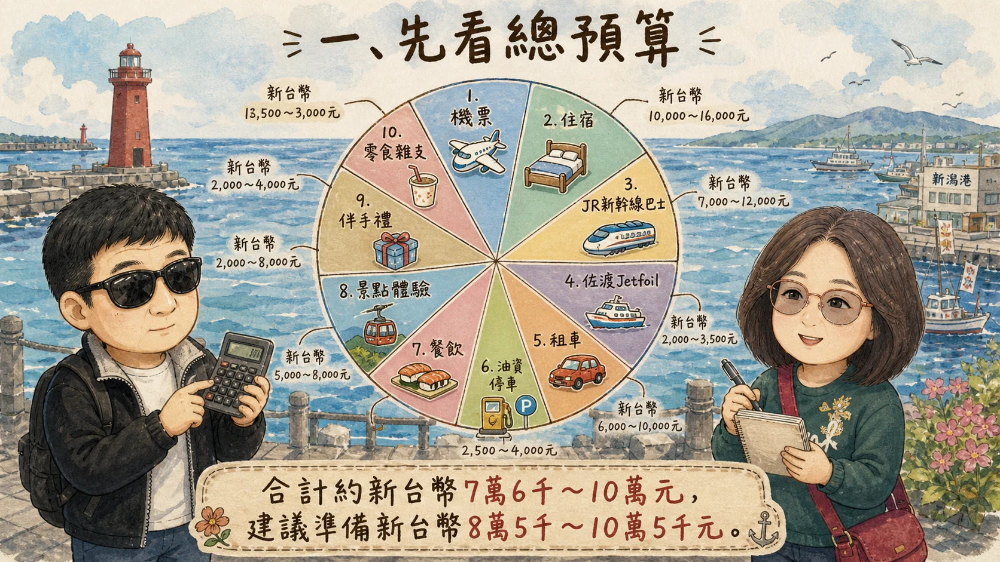
點圖放大 ↗BUDGET · 01
夫妻兩人費用總覽
夫妻兩人新潟八天七夜預估約 ¥363,000～478,000，折合 NT$76,000～100,000；另留 NT$5,000～10,000 緊急預備金，建議旅行基金抓 NT$85,000～105,000，平均每人約 NT$42,500～52,500。
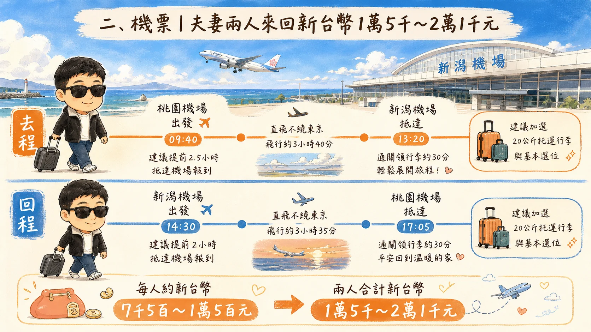
點圖放大 ↗BUDGET · 02
來回機票預算
桃園直飛新潟來回，兩人機票預算約 NT$15,000～21,000（每人 NT$7,500～10,500）。預算建議納入每人 20 公斤托運與基本選位，實際價格會隨日期、行李與座位選擇變動。
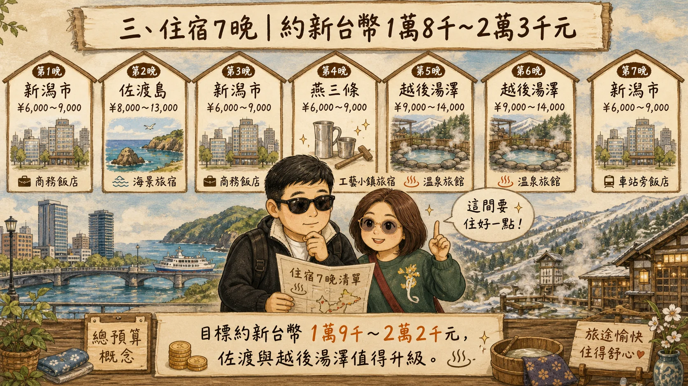
點圖放大 ↗BUDGET · 03
七晚住宿預算
七晚住宿來源估算約 ¥83,000～115,000，建議目標控制在 ¥90,000～105,000，約 NT$19,000～22,000。新潟市、燕三條以車站附近且交通方便為主；佐渡住一晚、越後湯澤住兩晚，可優先選擇舒適或有溫泉的住宿。
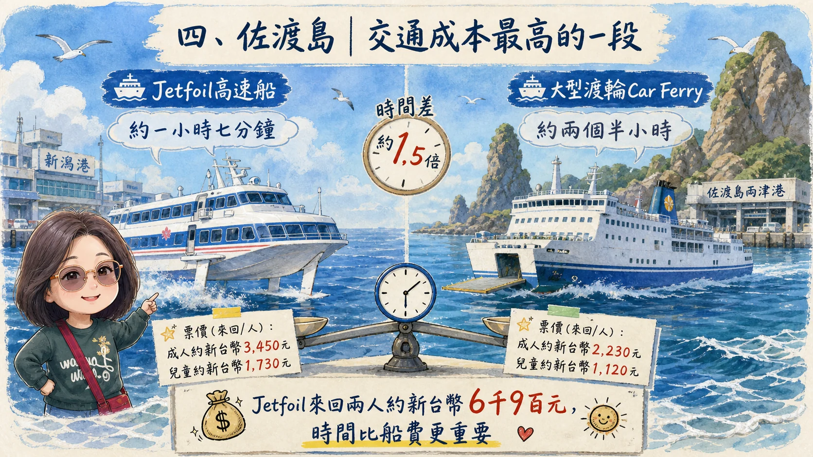
點圖放大 ↗BUDGET · 04
佐渡 Jetfoil 船票
新潟港至両津港 Jetfoil 成人單程約 ¥8,310，兩人來回約 ¥33,240、折合 NT$6,980。航程約一小時七分鐘；大型 Car Ferry 單程約兩個半小時，來源建議優先考量行程時間。
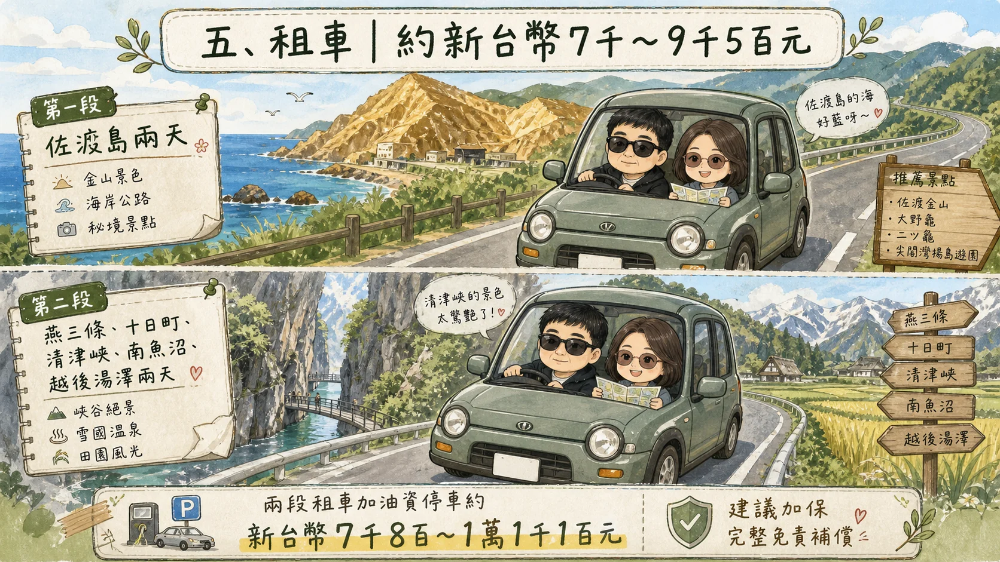
點圖放大 ↗BUDGET · 05
租車與自駕交通
租車安排在 Day 2～3 佐渡與 Day 5～6 本州，各約兩天；兩段租車抓 ¥27,000～38,000，另加油資、停車與可能的高速公路費約 ¥10,000～15,000。來源估算整體自駕約 ¥37,000～53,000，約 NT$7,800～11,100。
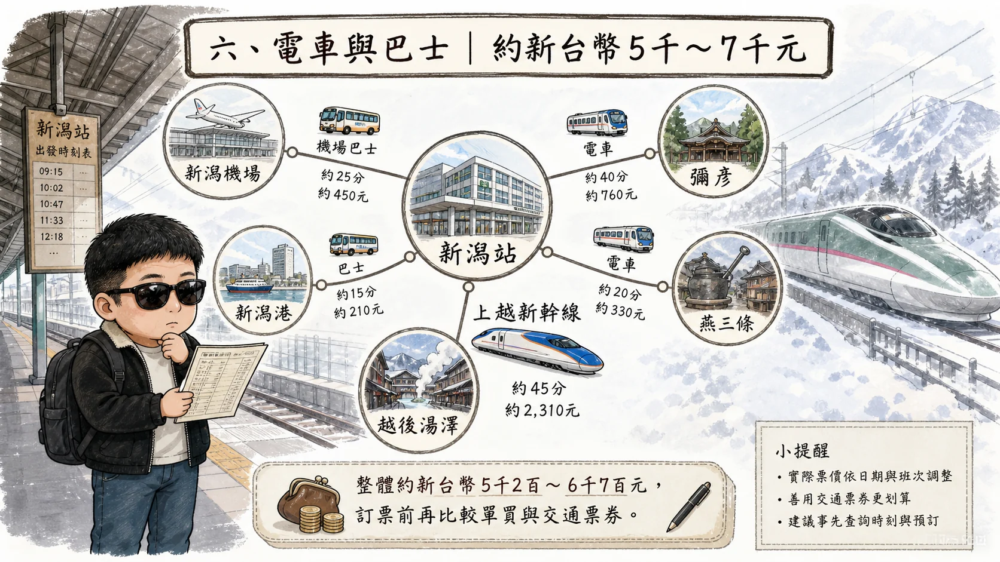
點圖放大 ↗BUDGET · 06
JR、新幹線與巴士
JR、新幹線與巴士涵蓋機場至新潟站、新潟站至港口、彌彥與燕三條間移動、越後湯澤返回新潟及市區交通；兩人預算約 ¥25,000～32,000，約 NT$5,250～6,700。來源建議訂票前再比較單買與適用 JR Pass。
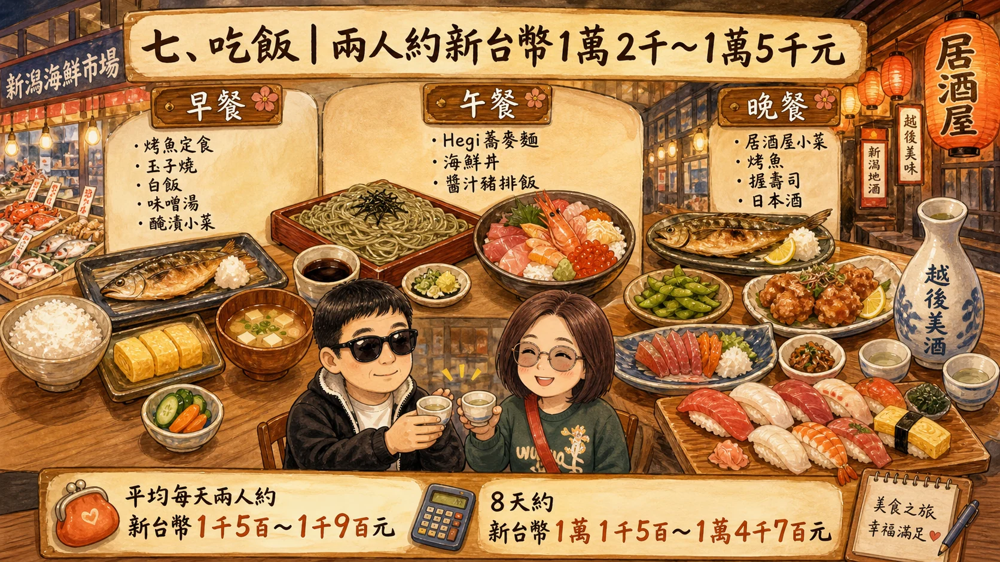
點圖放大 ↗BUDGET · 07
八天餐飲費用
兩人八天餐飲預算約 ¥55,000～70,000，折合 NT$11,500～14,700，平均每天約 ¥7,000～9,000。可依早餐、午餐與晚餐安排彈性抓費用，體驗越光米、日本海海鮮、蕎麥麵與地方料理；一泊二食則把已含餐費納入住宿計算。
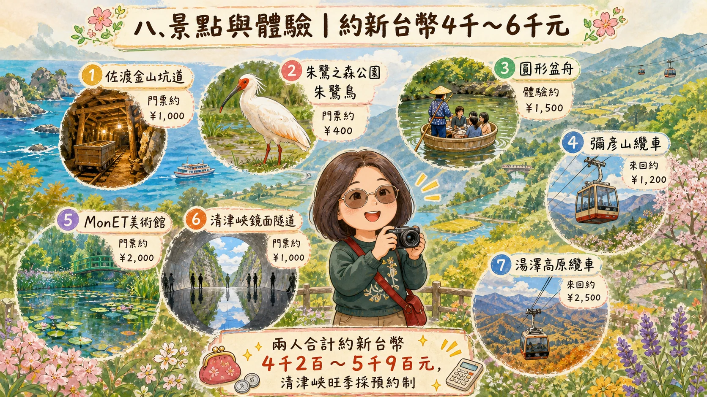
點圖放大 ↗BUDGET · 08
景點與體驗費
佐渡金山、朱鷺之森公園、盆舟、彌彥山纜車、MonET、清津峽、湯澤高原纜車及其他設施，兩人景點與體驗費抓 ¥20,000～28,000，約 NT$4,200～5,900；熱門日期與預約規定依來源提醒另行確認。
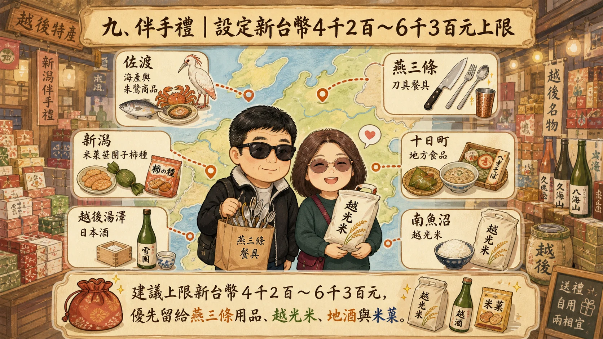
點圖放大 ↗BUDGET · 09
伴手禮預算
夫妻兩人伴手禮預算設在 ¥20,000～30,000，約 NT$4,200～6,300。可優先留給燕三條用品、南魚沼越光米、少量新潟地酒與米菓，並把佐渡、十日町、越後湯澤等地採買納入上限。
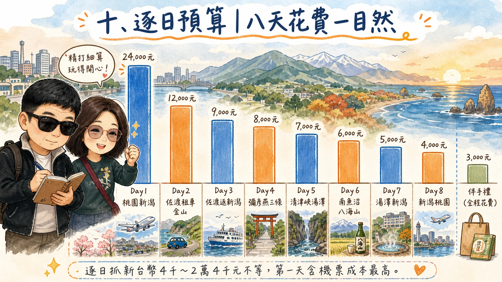
點圖放大 ↗BUDGET · 10
八天逐日預算
依來源逐日估算，Day 1 桃園至新潟 NT$18,000～24,000（含兩人來回機票主要成本）；Day 2 NT$9,000～12,000、Day 3 NT$5,000～7,000、Day 4 NT$4,000～6,000、Day 5 NT$6,000～8,000、Day 6 NT$5,000～7,000、Day 7 NT$5,000～7,000、Day 8 NT$4,000～6,000；另列全程伴手禮 NT$4,000～6,000。
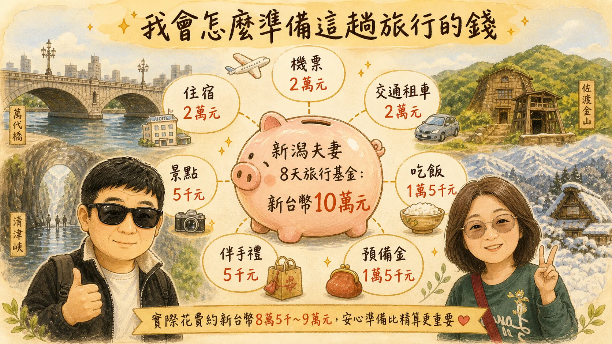
點圖放大 ↗BUDGET · 11
旅行基金與預備金
來源建議設定「新潟夫妻 8 天旅行基金」NT$100,000，概略分配為機票 2 萬、住宿 2 萬、交通租車 2 萬、餐飲 1.5 萬、景點 0.5 萬、伴手禮 0.5 萬及預備金 1.5 萬。確定出發日期後，再以實際票價、住宿、租車、JR 與船票更新預算。